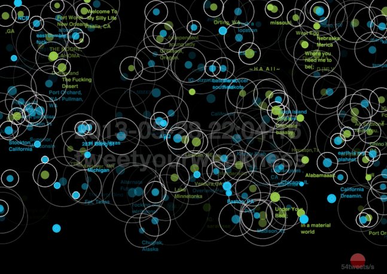

Projects
Production systems and applied-research projects from my time at Intuit, roughly newest first. Numbers are from internal evaluations and shipped production metrics; each entry notes the business impact I contributed to.
Intuit AI (2018 – present)
Intuit Assist — GenAI assistant for support experts
LLM agentsRAGRecSysLed the company's GenAI conversational assistant for customer-support experts and a real-time recommendation model that routes customers to the right support channel. Earlier in the same product line, built an automatic call/case-note summarizer that cut post-call agent documentation work. Impact: a flagship, company-wide initiative serving live customer-support operations at scale, with measurable reductions in agent documentation and handling time.
Behavioral-intelligence platform for support experts
Behavioral modelingSequence predictionAgent skillsHelp drive a "system of intelligence" that learns a hierarchical behavioral model of how tens of thousands of support experts actually work — mining anonymized activity traces into a taxonomy of actions, tasks, and skills. From ~30M activity events it infers a compact set of canonical tasks, and a next-action prediction model reaches ~98.5% top-5 / ~83% top-1 accuracy. That model feeds a factory that turns inferred tasks into executable AI "skills," plus next-best-task recommendation. Impact: collapses weeks of manual build work per skill into an automated pipeline and gives the org its first scalable, quantified view of what a large expert workforce does and how well.
Agentic workflow-discovery & skill-generation pipeline
LLM agentsWorkflow orchestrationTask inferenceCo-build a pair of services that turn raw expert activity data into executable agent skills: a multi-stage task-inference pipeline that clusters user sub-sessions into labeled task categories, and a workflow-orchestration service that composes and validates the resulting skills into a runnable DAG. Designed to run heuristically end-to-end (no LLM calls) as well as LLM-in-the-loop, with checkpoint/resume and per-stage isolation for reproducibility. Impact: the paved path for mass-producing production agent skills from real usage instead of hand-authoring each one.
Real-time in-conversation AI coaching
Real-time NLPSLM fine-tuningConversation intelligenceFine-tuned a compact conversational-coaching model that generates live hints and guidance for sales and support agents mid-conversation, plus behavioral-adherence detection that auto-completes checklists and produces post-interaction summaries — replacing manual quality-sampling and spreadsheet-based review. Part of a broader conversation-intelligence platform consolidating expert guidance, recommendation, coaching, and summarization. Impact: pilots showed double-digit lift in agent performance at high behavior-adherence rates and large reductions in the time managers spend reviewing conversations — a core lever for the Serve-to-Sell revenue motion.
Speech-intent classification: replacing a frontier multimodal LLM
Model compressionMultimodalArchitecture searchLed a systematic architecture-search and fine-tuning study for real-time speech-intent classification. Fusing lightweight, frozen audio and text encoders through a compact classifier — instead of routing through a costly frontier multimodal LLM — hits the production accuracy target (macro F1 0.746) at roughly 1,000x fewer parameters and a fraction of the latency. Technical report in preparation for external submission; see Publications.
Fine-tuned production models replacing frontier-LLM calls
SLM fine-tuningModel mergingConstrained decodingDelivered fine-tuned production models including a small language model that replaces a frontier-LLM call in a real-time memory/context-extraction service (~8x lower latency, 97%+ reliability), and a conversational-coaching model for live sales/support agents. Also built a lightweight model-confidence scorer (0.80 Pearson / 0.88 AUROC vs. an LLM-judge) used to gate output quality without an LLM call on every request. Impact: each of these replaces a costly frontier-LLM call in a production path, cutting per-request inference cost and latency while holding or improving quality.
Production ML infrastructure & tooling
AWS SageMakerKubernetesRL/eval orchestrationOwn production ML infrastructure across cloud ML platforms — training recipes and distributed RL/eval orchestration. Built a paved-path fine-tuning/RL library with an automated-research-agent feature for unattended architecture/hyperparameter search, and fixed a GPU/storage bottleneck that had been blocking 20+ eval configurations. Impact: gives scientists a self-serve, reproducible path to fine-tune and evaluate models and unblocked a stalled evaluation pipeline, accelerating the team's shipping cadence.
Knowledge-base recommendation & RAG agent platform
RAGRecSysSearchShipped a production knowledge-base recommendation feature (5 quarters of iteration) with measurable handle-time and satisfaction impact, and led development of a proprietary RAG-based GenAI agent platform. Earlier, as a founding member of Intuit's first data-science team, built call-routing classification and a domain-specific embedding model that lifted query coverage from 87% to 94%.
Earlier work
Nokia, IBM T.J. Watson, and Ph.D. research at UC Santa Barbara
Analytics & recommendation — Nokia Technologies
Built large-scale analytics for device/content signals using Spark/Scala, and ML models for recommendation and search ranking.
Graph mining & visual analytics — IBM T.J. Watson Research
Graph-mining and reasoning prototypes; interactive visual analytics for surfacing model insights.
Ph.D.-era research & media-art projects (UC Santa Barbara, 2011–2016)
TweetProbe: real-time microblog stream visualization
A real-time data-visualization framework for Twitter streams — trending tweets, hashtags, and message sentiment — designed both as an analyst's tool and as a wall-sized interactive media-art installation.

Modeling trust & credibility in microblogs
Credibility models to automate the evaluation of information reliability across social networks, the open web, and semantic-web sources, accounting for how a reader's context and trust in a source shape perceived credibility.
Real-time hand-pose recognition & marker-based AR interfaces
Real-time articulated hand-pose estimation from a single depth camera for mixed-reality interfaces, and a set of adaptive interaction techniques (nested markers, light-aware rendering, sound- and motion-based interaction) for marker-based augmented reality.
Interactive data visualization & media art
Interactive visualization frameworks (WiGis) and data-driven media-art pieces exploring how visual representation shapes the way people consume information.